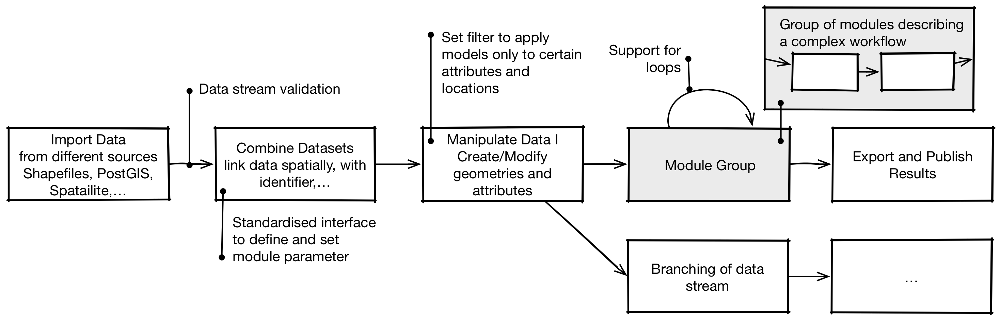

Overview¶
DynaMind is a light weight open source GIS workflow/simulation engine for developers and researchers to make development and sharing of models that work with rich interlinked GIS data sets easier.
Key features of DynaMind are:
- Interactive workflow engine that allows GIS models to be combined to describe complex processes
- Standardised and easy to use interfaces building on the GDAL library for C++ and Python to develop GIS models as DynaMind Modules that can be shared with others
- Support for working with interlinked GIS and non-GIS data.
DynaMind follows a modular design concepts with DynaMind being the heart and sole of the workflow/simulation engine. DynaMind provides the workflow logic and module handling, which can be accessed through following C++ or Python interfaces:
- Simulation interface to create, modify and execute simulations
- Module interface that enables users to developed their own modules through an easy to use database interface building on in the GDAL library.
To provide a ready to use environment the DynaMind-Toolbox combines several tools building on DynaMind including:
- Standard modules to import and export data from GIS databases and Shapefiles and do simple manipulations
module interface - Graphical user interface to build simulations A Quick Introduction to the DynaMind GUI
- Command line
- Python interface for setting up workflows
Simulations¶
The figure below gives an overview of the supported features and describes a typical use case.
In a typical simulation a series of modules are combined to define a workflow.
- Data Import: Firstly, a simulation requires data, often from multiple sources. The standard modules provide therefore a set of modules building on the GDAL library supporting a variety of standard GIS exchange formats (see here) as well as non GIS data.
- Interlinked Data Set: An interlinked data set provides the foundation for complex simulations. The Standard Modules provide several modules to spatially or non-spatially link different data sets to an interlinked data model that reflects this interrelationships.
- Manipulate Data: To manipulate the interlinked data set DynaMind provides a number of generic modules that allow to derive attributes from the interlinked data (see here). Combining several of this modules allows complex processes to be described.
- Grouping of Modules: Models can be combined to a module Group. Such a group can be executed repeatedly. Similar to a for loop, groups can be used to iteratively manipulate data to describe dynamic processes.
- Export and Publish Results To publish the resulting data sets the Standard Modules provide modules to export data into common GIS exchange formats or GIS databases.